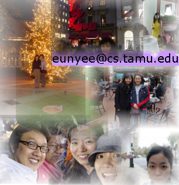

 cs.tamu.edu, 979.458.2818 (lab)
cs.tamu.edu, 979.458.2818 (lab)
My research interests include web mining and internet technology. I am applying these technologies in the context of human-centered systems, such as combinFormation. For example, Google generates search results based on PageRank. The result is that people can usually get more relevant results from Google than from other search engines. My thesis topic will incorporate measures such as PageRank, and recency/frequency to model the spontaneous evolution of personal interests during processes of information discovery. With these mesurements, our system will become more able to effectively generate relevant and interesting information compositions.
I am also interested in how people collect, organize, and utilize digital information. I conducted a study by interviewing college students. Interview questions include how they collect digital information and files and what kinds of mechnism they used to manage their information. Also, they were asked about their inconveniences and breakdowns in the current practices. Both qualitative interview data and quantitative survey data was analyzed and more research will be conducted to support people to have better representation of collections so that they can utilize their collections more easily and efficiently.